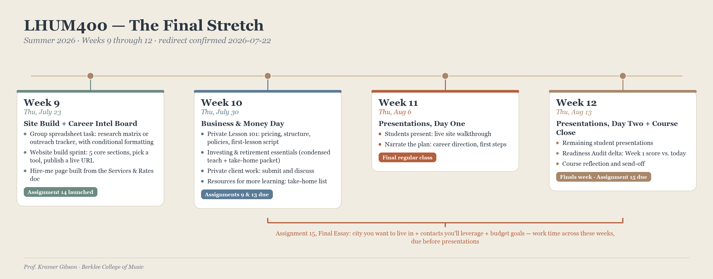

Where we've been, where we're going.

This summer we built a foundation first, getting to know each other and naming professional habits and goals in that first readiness audit. From there we moved through professional communication tools: artist statements, resumes, and cover letters against real job postings, a fan website, and client communication case studies built from real recorded voices of working musicians. Those documents are ones you'll keep using well past this class.
Right now we're in the business-skills stretch of the semester, where spreadsheets stop being an abstract skill and become a tool for seeing your own financial decisions clearly, real numbers mixed with hypothetical ones so you can forecast, compare gigs, or test a break-even scenario before committing to it. Alongside that, three self-directed project strands are running in parallel: interviewing a working professional, private client work you document, and your portfolio website. Those three strands are exactly where you have real freedom right now, choosing who you interview, what client work fits your direction, and how your website represents you, with class time built for peer check-ins rather than one prescribed path.
What still needs wrapping up: the decision-making and budget spreadsheets, the private client work with its documentation, then portfolio integration, pulling everything together into a completed portfolio, a final essay on your career path, and a presentation making the case for where you're headed, alongside honest conversations about resilience and creative integrity that are meant to travel with you past finals.
When the semester ends, the learning shouldn't. The portfolio stays live and editable, the spreadsheet habits transfer to any freelance decision you'll face, the client communication framework applies to the next real inquiry, and the network from the interview project and alumni reflection is meant to keep growing on its own. The real measure of this course isn't the grade, it's whether you keep using these tools the first time real money, a real client, or a real career fork shows up.